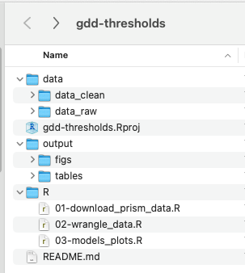
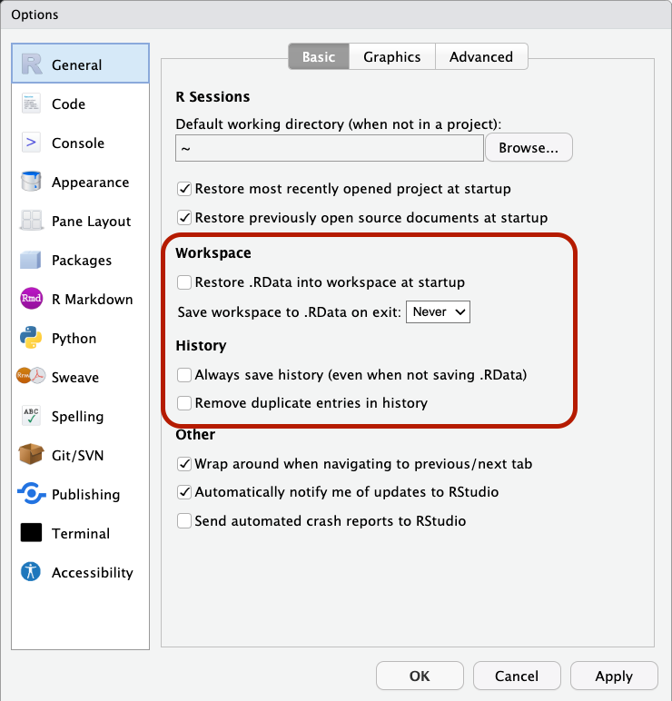

Reproducibility & Data Science in R
Session 1
September 3, 2024
What is Reproducibility & Why?

The Whole Picture
A (usually fictional) story:
You read a paper and think “I bet I could apply their analysis methods to my work!” You click a DOI link in their Data Availability section. It opens to a web page where you can download a folder with R code, data, and documentation. You open the folder in R Studio and you are prompted to install all the packages you need to run the code. You open the analysis code script and hit “run”. All the code runs perfectly with no errors, creating all the figures, tables, and statistics used in the paper. You scroll through the well-formatted R code and understand from the authors’ comments exactly what the code does and how to adapt it to your work.
We want to help you make this story a reality for someone!
Syllabus & Workshop Materials
Workshop series website:
https://cct-datascience.github.io/repro-data-sci/
Reproducibility Colloquium
Format: short talks on one or two ways you’ve improved a project
Your task for this week:
Pick a real project to give a “reproducibility renovation” over the next 5 weeks
Every week, you’ll make improvements and document your progress for your talk
Screen Setup
- Dual monitors will be very helpful
- Virtual desktops (“Spaces” in macOS) also helpful
- Let us know if you do not have access to a second monitor
Creating a Research Compendium
Learning Objectives
- Understand the benefits of organizing a project as a research compendium
- Use RStudio projects to create self-contained reproducible projects
- Use best practices for organizing files in a project
- Create a “toy” research compendium you can use throughout this series
A research compendium is a collection of all digital parts of a research project including data, code, texts (protocols, reports, questionnaires, meta data). The collection is created in such a way that reproducing all results is straightforward.
(“project” could be a single manuscript or multiple manuscripts that use the same data or code—that’s up to you to decide)
Research Compendium Best Practices
Treat raw data as read-only
Use scripts to “clean” and wrangle data
Treat generated outputs as disposable
Put data, code, and outputs in different folders
What goes in a compendium?
Ideally, everything related to that project
- Data
- Code
- Lab notebook
- Notes about analyses
- Outputs
- Documentation / metadata
- Reports / presentations
- Manuscripts
Basic compendium structure

- Short machine and human readable name
- Separate folders for “raw” and “clean” data
gdd-thresholds.Rprojfile is created by RStudioR/folder contains all code to reproduce analysis. Could be namedscripts/or something else- R scripts are numbered with two digits so alphabetic sorting = numeric sorting
- README.md is a markdown (plain text) document (we’ll get to README’s later)
RStudio projects
- Never worry about
setwd()orgetwd()again! Your compendium is always your working directory. - Switch between many active projects. RStudio remembers where you left off.
Tip
Don’t worry if you don’t know what a working directory is, Renata will talk more about it next week!
DEMO: create a new RStudio Project
Settings for Success

Fresh start ensures reproducibility
If your analysis relies on saving your environment in .RData, there are better solutions
Build your (toy) research compendium
Using the RStudio file pane OR Finder (macOS) / File Explorer (Windows)
- Create folders for
data/,R/,output/andnotes/ - Download the gapminder dataset and place it in your
data/folder - Create a text file called
README.md
README
A README is a plain text document in your research compendium that contains:
Brief project summary
Project status (e.g. work-in-progress, published)
Who is involved
If re-use is allowed and how to give credit
Structure of repo (which files do what?)
Instructions on how to reproduce results
Example READMEs for research compendia
Note
We will revisit how to make a README formatted for GitHub in week 3
Getting Help
Getting Help
Every week, we’ll try to point you to places to look for help when you’re stuck or to dive more deeply into the topics covered.
Asking a question in our Slack channel is always great place to start!
Resources:
RStudio IDE: Posit Community Forum
Research Compendia: The Turing Way
A note on AI
Generative AI / large language models (LLMs) can generate code, explain code, or suggest code improvements
GenAI/LLMs have been described as “hallucinating”, “stochastic parrots”, and even “bullshit machines” (Hicks, Humphries, and Slater 2024)
Making things up is fundamental feature of GenAI and will likely always be a problem
A note on AI
Beginners have difficulty spotting mistakes in AI generated code solutions (Kabir et al. 2024)
Struggling and frustration are important parts of learning—short circuiting these steps does you a disservice in the long run
AI presents a host of ethical, environmental, and copyright issues to consider
Takeaways
- Structure files in self-contained projects or “research compendia”
- Put data in a separate folder and never edit raw data!
- Naming things well is difficult but worth spending time on
- Use RStudio projects with one project per compendium
- Include a README file in each compendium
Your Tasks
- Choose a project you will focus on for your “reproducibility renovation”
- Does your project follow the file naming and organizations strategies we discussed?
- If not, re-organize and re-name to improve it
- Create or improve a README for your project